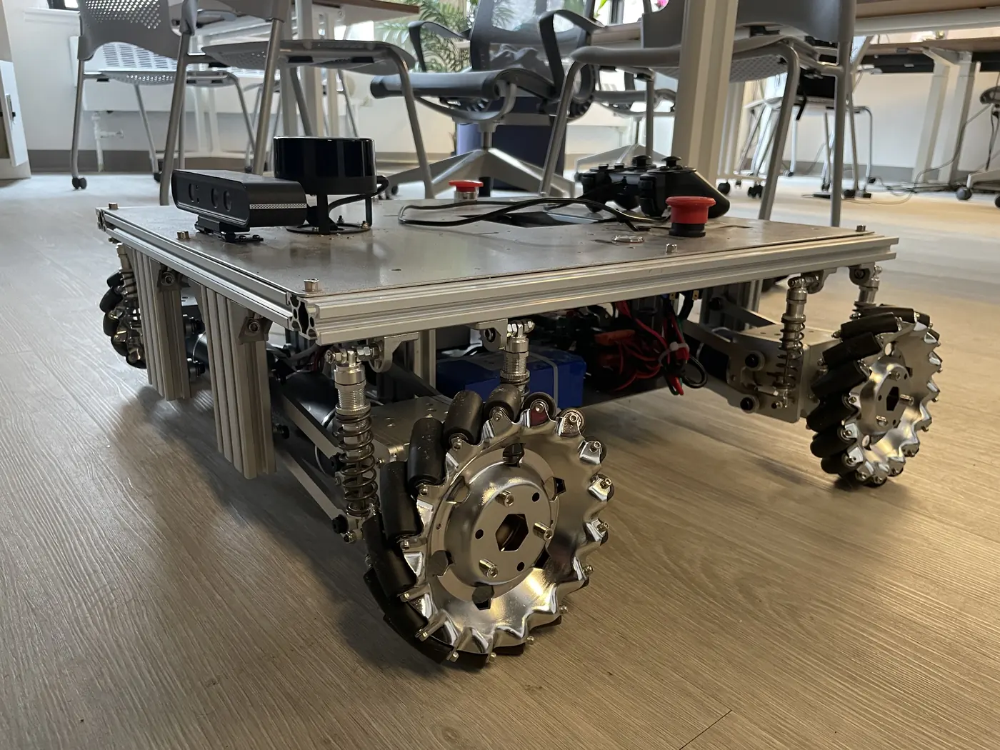
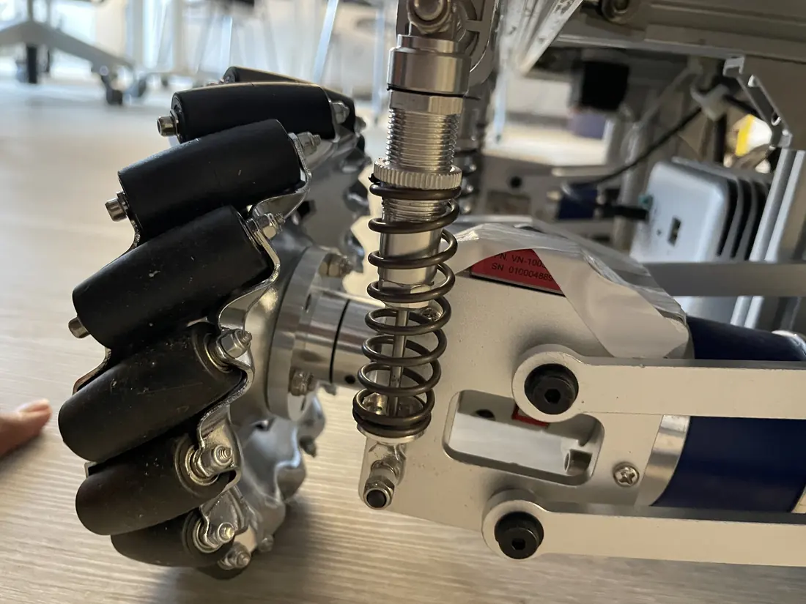
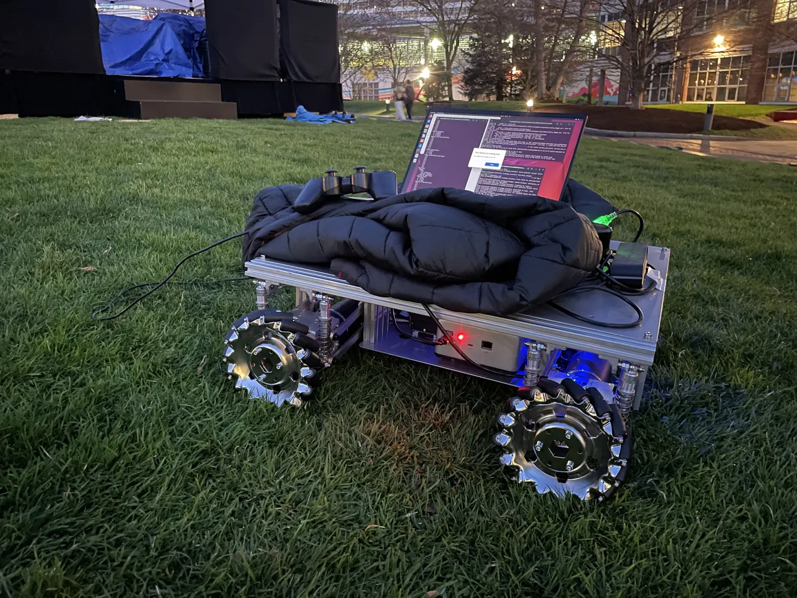
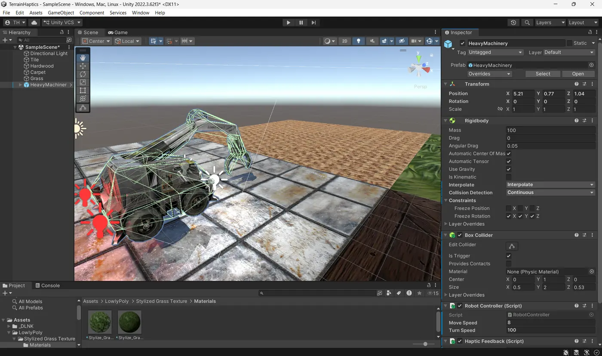

Northeastern University
Expected May 2028M.S. Mechatronics, Robotics & Automation · Concentration in Mechanical Engineering · Boston, MA
Coursework: Robotics Sensing and Navigation, Mobile Robotics, Robot Design, CAD and Manufacturing
> Power bus · 48 VOK
> Absolute encoders · no homingOK
> Gripper calibrationOK
> Loading portfolioOK
Mechanical engineer moving into robotics. Quality at Bosch, hydraulic design at Minar Industries, Certified SOLIDWORKS Professional.
Vibrotactile terrain perception: a wheel-mounted IMU, an SVM at 87.3% accuracy and simulated Xbox haptics that let an operator feel the floor.
Graduate Engineer at Bosch (2023–25), then Design Engineer at Minar Industries (2025). Quality systems, CAD and production floors.
An elbow joint actuator for a surgical assist arm: frameless motor, 100:1 strain-wave gear, fail-safe brake. ME 5374, Fall 2026.
I'm a mechanical engineer who has worked in quality at Bosch and in hydraulic cylinder design at Minar Industries. I'm a Certified SOLIDWORKS Professional, now doing an M.S. in Mechatronics, Robotics & Automation at Northeastern, and I'm looking for a co-op in mechanical design, manufacturing or quality engineering.
M.S. Mechatronics, Robotics & Automation · Concentration in Mechanical Engineering · Boston, MA
Coursework: Robotics Sensing and Navigation, Mobile Robotics, Robot Design, CAD and Manufacturing
Bachelor of Engineering in Mechanical Engineering · Karnataka, India
From a ROS 2 sensing pipeline that lets an operator feel the floor in simulation, to fabrication-ready CAD and automated hardware.
Classifying floor surfaces from wheel-mounted IMU vibrations, then rendering them as Xbox controller haptics in a Unity simulation, so a teleoperator can feel what the robot feels. Team project with Tamzid Hossain and Stanley Nketiah.



1 Held-out test runs (runs 1 and 10 of each surface); SVM on time- and frequency-domain features from the accelerometer and gyroscope.
| Actual (rows) vs. predicted (columns) | Carpet | Hardwood | Grass | Tile |
|---|---|---|---|---|
| Carpet | 97.2 | 0.7 | 1.4 | 0.7 |
| Hardwood | 2.0 | 72.3 | 0.0 | 25.7 |
| Grass | 0.0 | 0.0 | 99.4 | 0.6 |
| Tile | 2.1 | 18.1 | 0.7 | 79.2 |
Rows: actual surface · columns: predicted
Frequency features carry most of the signal: 78.1% accuracy on their own.
Adding the gyroscope lifts accuracy from 82.8% to 87.3%.
Grass and carpet separate cleanly. Hardwood and tile overlap in PCA, a data limit at 40 Hz rather than a model limit.
Engineered features beat a raw-signal 1D-CNN at this dataset size (87.3% vs. 82.5%).
The project's terrain-to-haptic (T2H) mapping. Pick a surface: it rumbles a connected gamepad, vibrates a phone, or plays through your speakers.
Select a surface

A bolt-in elbow module with a frameless motor, 100:1 strain-wave gear, fail-safe brake and an absolute output encoder in a 90 mm housing. Full breakdown in Now →
Over two years between the shop floor and the design desk: quality systems for precision diesel components at Bosch, then hydraulic cylinder design at Minar Industries.
Karnataka, India · Hydraulic cylinders
Karnataka, India · Precision diesel components
Visvesvaraya Technological University, Karnataka, India
An elbow joint actuator for a surgical assist robot arm, my ME 5374 Robot Design final project this fall, alongside the M.S. at Northeastern (expected May 2028). I'm looking for a co-op in mechanical design, manufacturing or quality engineering.
One complete bolt-in joint module for a lightweight arm that holds a surgical tool or endoscope camera next to a patient. It has to hold position when power is lost, know its exact angle at power-up with no homing move, and stay small enough to keep out of the surgeon's way. Medical arms like the KUKA LBR Med set the reference.
Open to co-op roles in mechanical design, manufacturing and quality engineering.
If the preview doesn't load on your device, use Download.